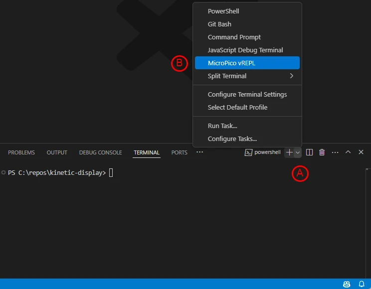
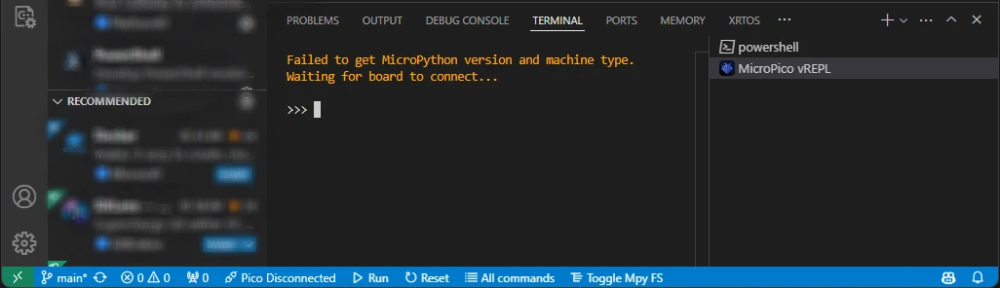
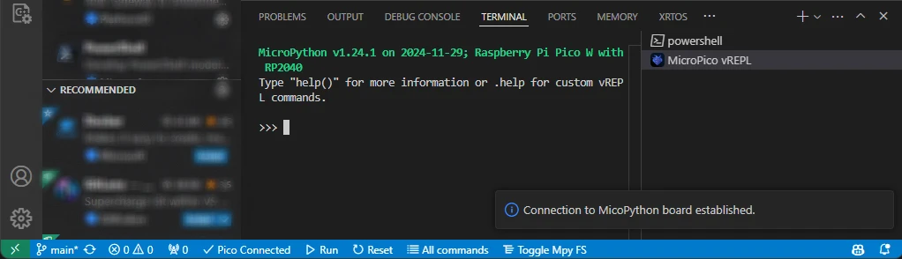

Software and Microcontroller Preparation
Prerequisites
- Install Visual Studio Code
- With VS Code installed and open, click on the "extensions" icon on the leftmost panel and install the following extensions from Marketplace:
- Python by Microsoft
- MicroPico by paulober
- Download the flash_nuke Uf2 file
- Clear your Raspberry Pi Pico before flashing a new build:
- Plug a USB cable into your Raspberry Pi Pico's USB port
- Press and hold the BOOTSEL button on your Raspberry Pi Pico while plugging your USB cable into your computer
- Verify an RPI-RP2 storage device appears
- Drag and drop the flash_nuke.uf2 file into the RPI-RP2 storage
- Download the micropython Uf2 file for the Raspberry Pi Pico and Raspberry Pi PicoW
- Install Micropython onto your Raspberry Pi Pico
Verify Micropython on your Raspberry Pi Pico
- Open Visual Studio Code
- On the top menu select Terminal->New Terminal
- In the terminal pane, select the terminal menu "A" followed by "B" the MicroPico vREPL sub-menu 
- The "MicroPico vREPL" terminal will show your Pico is disconnected 
- Plug your Raspberry Pi Pico into the USB port and the terminal will show your Pico as connected 
- Type the following code in the terminal window, copy/paste each line separately:
from machine import Pin
p = Pin(25,Pin.OUT)
p.on()
p.off()
Verify your Pico's onboard LED lights up